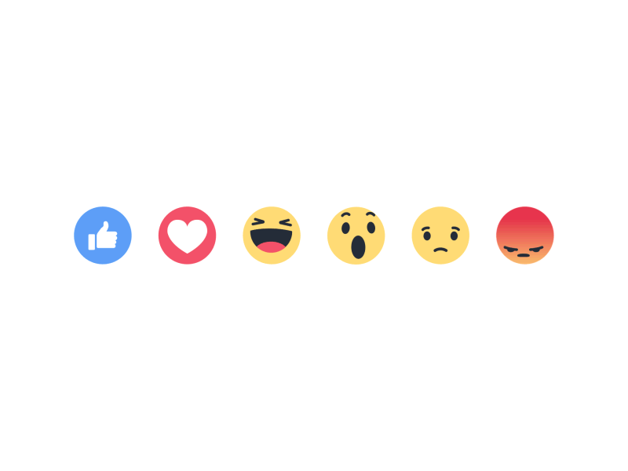

Facebook
PRODUCT DESIGN INTERN
Improved the Pages experience for the millions of admins managing their online business presence. Collaborated with the News Feed, Local, and Instagram teams to launch a new guidance tool and distribution features. Project under NDA, contact for more info.

Ithaca Transit
PRODUCT MANAGER + DESIGNER
Work with a student-run project team and currently leading a team of 12 designers, marketers, iOS, backend, and android engineers for Ithaca Transit, a transportation app with over 11K+ downloads and 6K+ MAU.
→ 2019 Case Study
→ iOS App